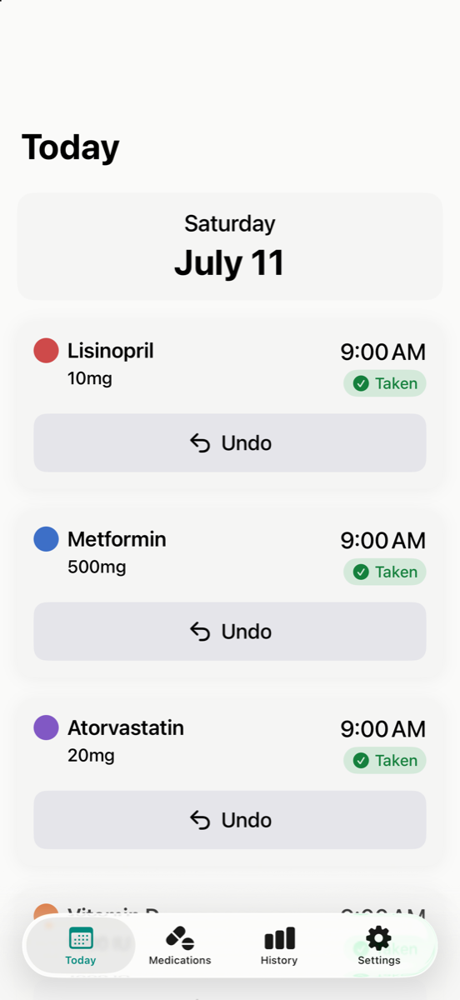
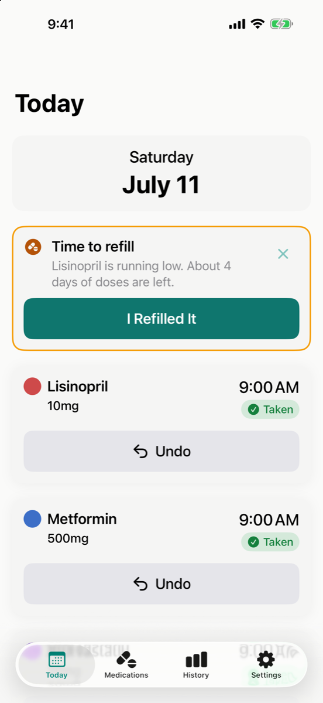
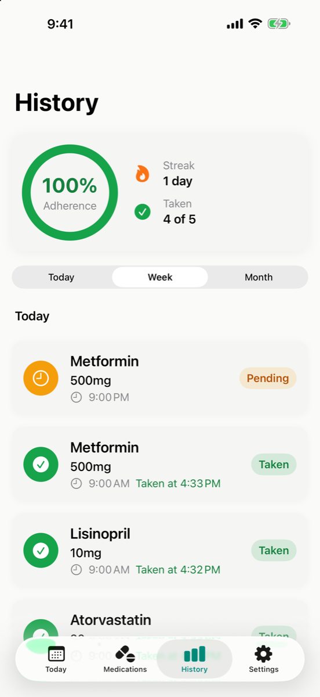
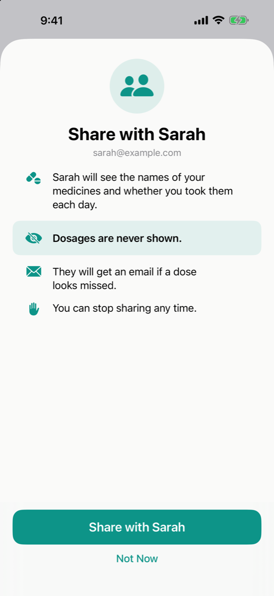

Big take now button
Medication time should have one clear next step. Dose Pop keeps the main action large and easy to tap.
For iPhone and iPad
Dose Pop reminds you what to take and when, in large print with big buttons. Made for seniors and the families who look after them.
Pay once, $4.99. No subscriptions. No accounts.

Built for confidence
Medication time should have one clear next step. Dose Pop keeps the main action large and easy to tap.
See simple proof like taken at 8:04 AM, so nobody has to wonder whether a dose was already taken.
Reminders can keep coming back until the dose is marked taken, skipped, or delayed.
When something is missed, the choices stay simple: taken, skipped, or remind me later.
High contrast, large type, and simple layouts make the app easier to read at a glance.
Add the medicine, choose the time, and move on. Search a built in list of real medication names so setup stays fast.


For family backup
Coming in the next updateSoon you will be able to share your medicine schedule with one family member. They get an email if a dose looks missed. Dosages are never shared, and you can stop any time.

One price of $4.99 unlocks Dose Pop for good. No subscriptions, no accounts, and no upsells.
Dose Pop is a reminder tool, not medical advice. Always follow the instructions from your doctor or pharmacist.